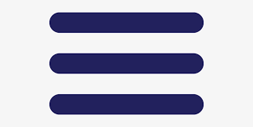

<div [ngClass]="{'sidebar-open': isOpen}" class="sidebar">
    <ul>
      <!-- <li><a href="#">Menu Item 1</a></li>
      <li><a href="#">Menu Item 2</a></li> -->
      <li class="has-dropdown">
        <a href="#">Apply</a>
        <ul class="dropdown">
          <li><a href="#">Leave</a></li>
          <li><a href="#">OT</a></li>
          <li><a href="#">OD</a></li>
        </ul>
      </li>
      <!-- <li><a href="#">Menu Item 4</a></li> -->
    </ul>
  </div>
  
  <div id="main" [ngClass]="{'main-open': isOpen}">
      
  </div>
<!-- <i class="bi bi-menu-up"></i> -->